一夜没睡。git blame的结果烙在视网膜上——陆薇的账号，142处后门代码提交。时间分布在过去三个月，每次都是凌晨两到四点。
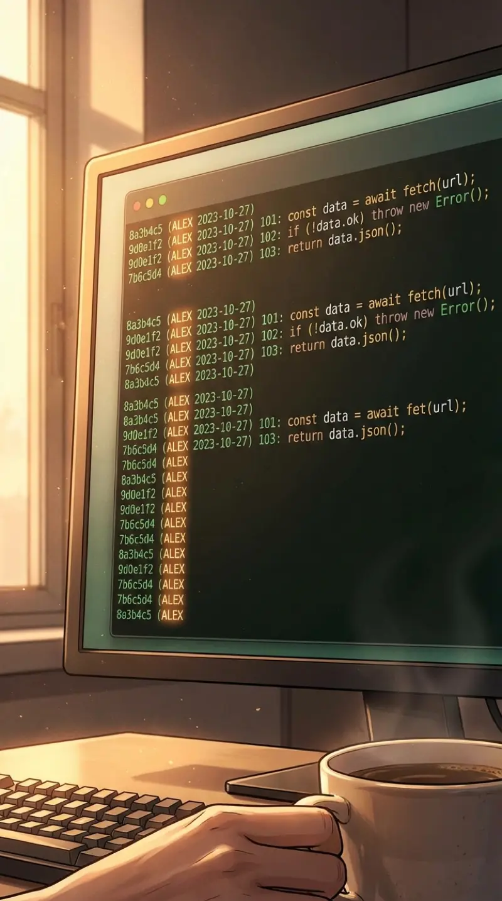
屏幕上的名字像烙铁一样灼眼。142行核心后门代码，每一行都指向同一个人。我的联合创始人。我最信任的技术搭档。
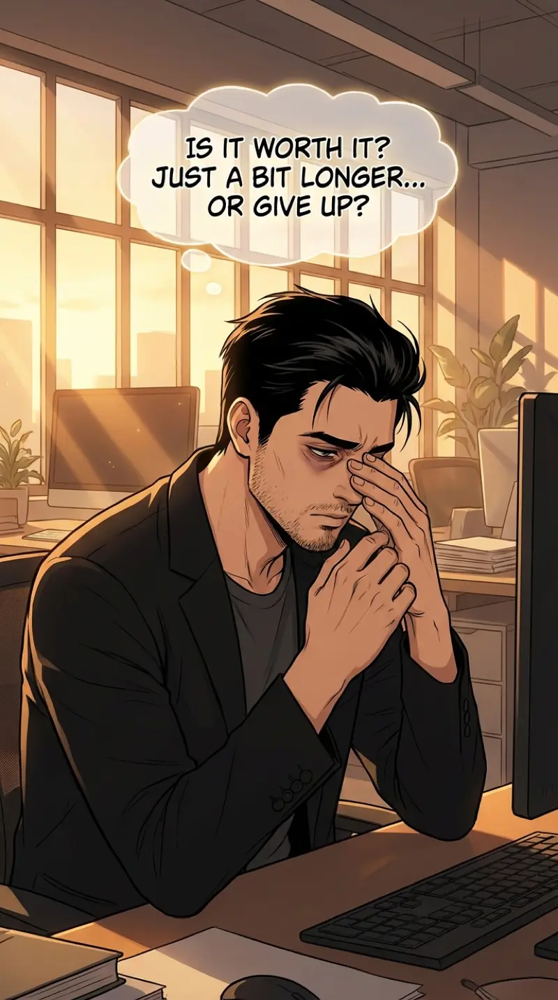
但我不能直接质问她。如果她真的是内鬼，打草惊蛇等于输。如果她不是——冤枉联合创始人，团队就完了。
早上九点，陆薇准时走进办公室。白衬衫，深蓝铅笔裙，银框眼镜。和每一天一样。她经过我工位时说了句："昨晚的训练跑完了，loss降到0.3以下。"语气平淡，像在说天气。
我的超频感知不自觉地触发了。时间慢了下来。
她的瞳孔没有扩大——没有紧张的生理信号。呼吸频率正常，每分钟约14次。手指没有微颤。
唯一异常：她的银框眼镜比平时推得更高。一个微小的、只有在她高度专注时才有的动作。
她在专注什么？
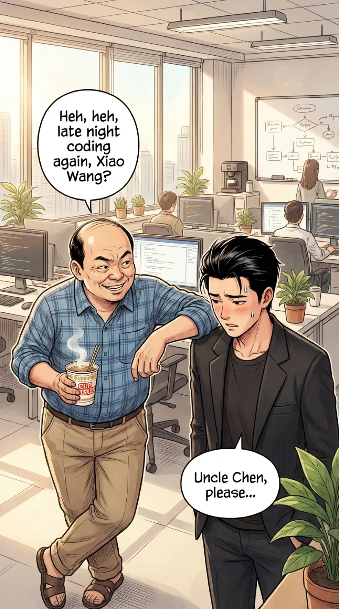
我盯着陆薇看了太久。老周端着泡面经过，低声说："朱总，你这眼神……HR会找你谈话的。"
我回过神来。"我在看她的……眼镜。"
老周撇嘴："谁信啊。"
[决策-15] 如何调查陆薇？直接对质，还是暗中取证？
我选了B+C——调取她的全部操作日志，同时设一个蜜罐陷阱。
投资人教会我一件事：信任是结论，不是前提。你先拿到数据，数据会告诉你谁值得信任。
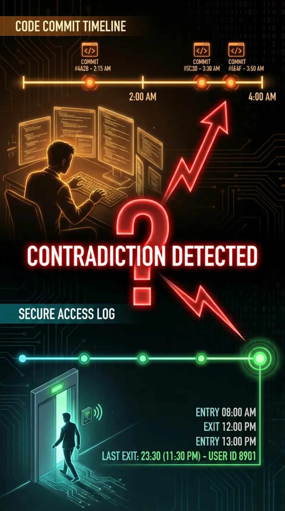
发现一：142处后门提交的时间戳，全部在凌晨2:00-4:00。但陆薇的门禁记录显示，这三个月她最晚离开办公室的时间是23:30。
她的账号在提交代码，但她不在办公室。
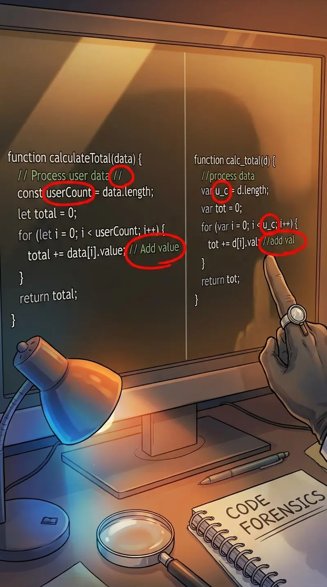
发现二：后门代码的注释风格和陆薇不同。陆薇写注释用//开头加一个空格，后门代码用//开头无空格。
程序员的编码习惯就像笔迹，很难完美模仿。
我的结论开始转向：有人盗用了陆薇的账号。
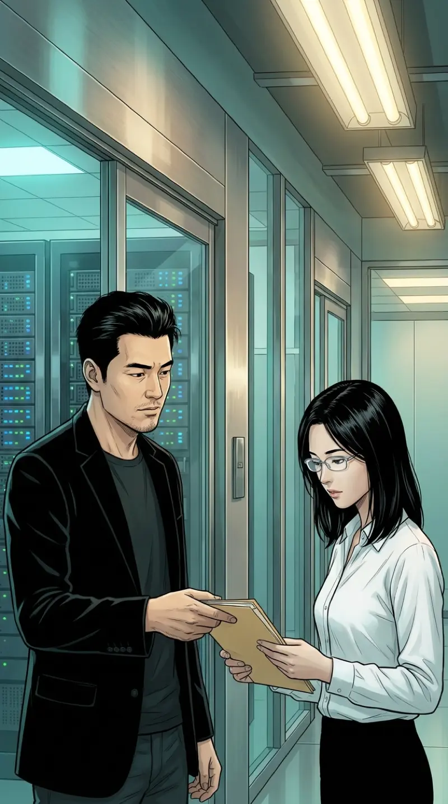
下午。我释放了"陷阱信息"——告诉陆薇一个假消息：明天有一家大客户要来参观服务器机房。
如果这个信息泄露给竞对耀星科技，说明陆薇的通信渠道有问题。
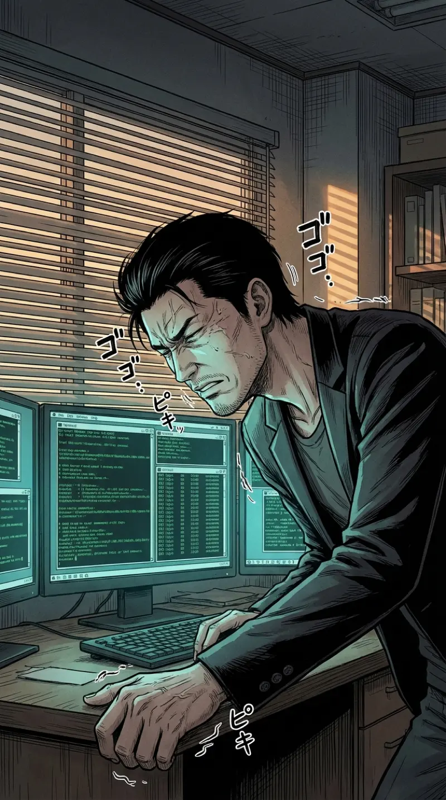
然后我做了另一件事：用超频感知分析公司内网的所有SSH登录记录。
Lv.1的感知范围不够——数据量太大，光流开始模糊。太阳穴发胀。
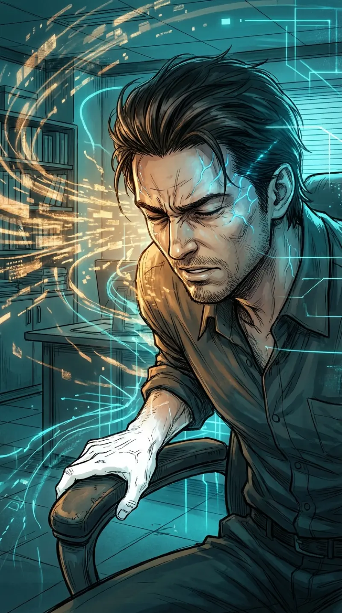
闭上眼睛。放开限制。
我需要推进到更深层次。
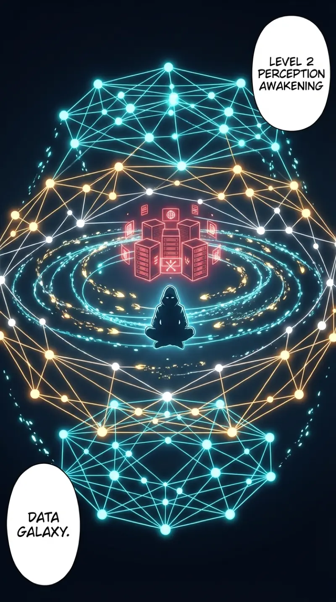
时间彻底静止了。
所有数据流不再是模糊的光线，而是变成了清晰的三维拓扑图。每一个登录节点、每一次数据传输、每一个异常跳转——全部可视化、可交互、可追溯。
Lv.2: 深度分析 — 解锁。
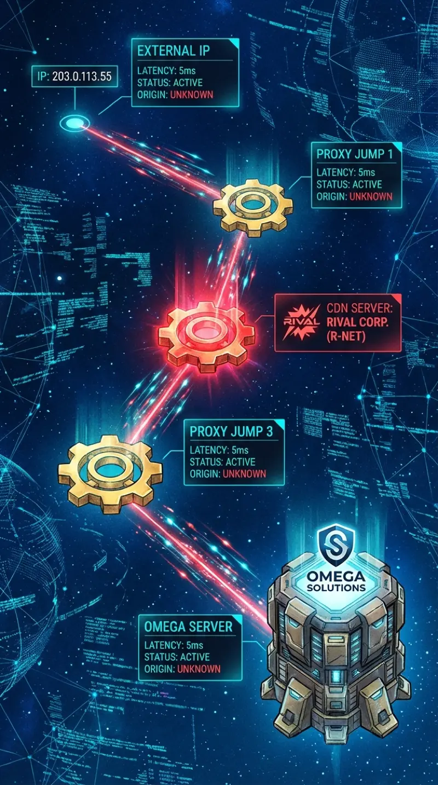
在这个0.03秒的世界里，我看到了——
一条隐藏的SSH隧道。从公司外部一个IP，通过三层跳板，连入陆薇的开发机。
三层跳板的中间节点——是耀星科技的CDN服务器。
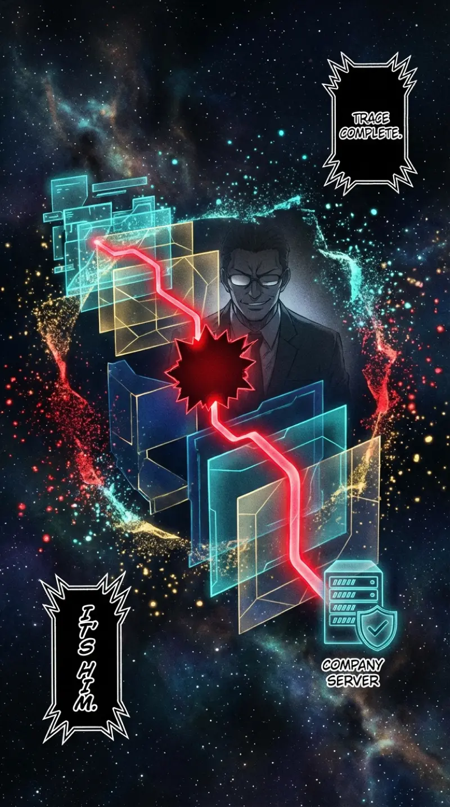
方总的人在用陆薇的账号写后门代码。
不是陆薇背叛了我。是方总在暗中渗透我的公司，并且栽赃给我的联合创始人。
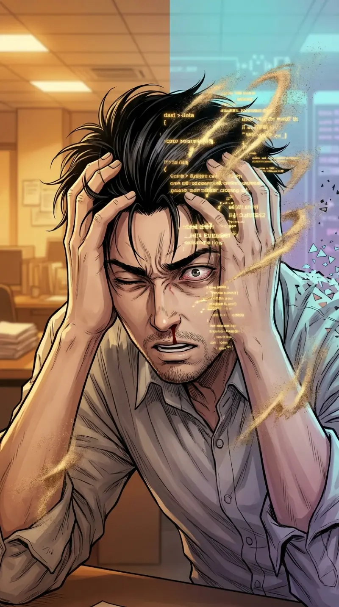
但超频Lv.2的代价立刻降临——比Lv.1猛烈十倍。
剧烈的偏头痛。视线模糊。右耳开始听到高频蜂鸣声。短期记忆出现碎片化——某些细节正在从脑海中像沙子一样漏掉。
我摇摇晃晃地走到洗手间，把冷水拍在脸上。镜子里的自己脸色苍白，鼻血又来了。
但我拼命抓住了关键信息：耀星科技 → SSH隧道 → 陆薇账号 → 后门代码 → 栽赃。这条链刻在脑子里。其他细节——正在模糊。
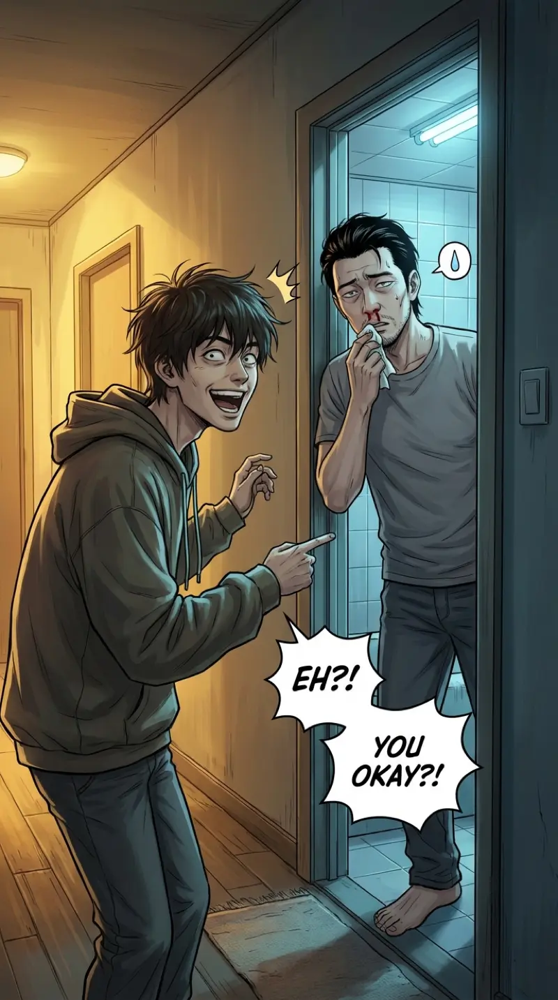
从洗手间出来，撞见陈磊。他看着我苍白的脸和鼻血说："朱总，你不会是……怀孕了吧？"
我："……你大学生物学怎么过的？"
他耸肩："男人也不是不可能嘛，在AI时代。"
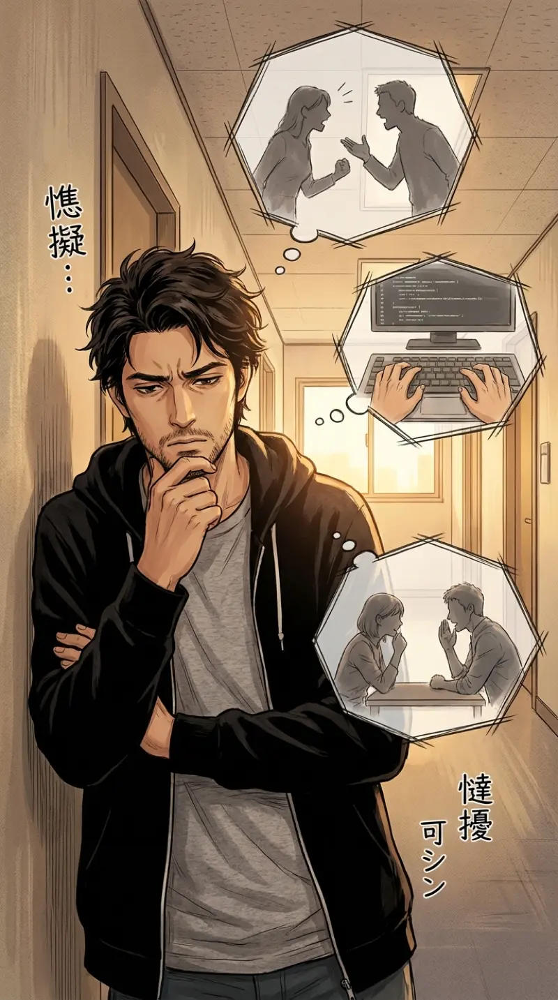
[决策-16] 发现方总在渗透公司并栽赃陆薇。接下来怎么做？
我选了C——告诉陆薇我发现了渗透，但不提她被栽赃。让她配合加固系统。
告诉她被栽赃，她的第一反应会是愤怒——愤怒的人容易犯错。等我准备好反击方案，再告诉她真相。那时候她的愤怒可以变成精准的力量。
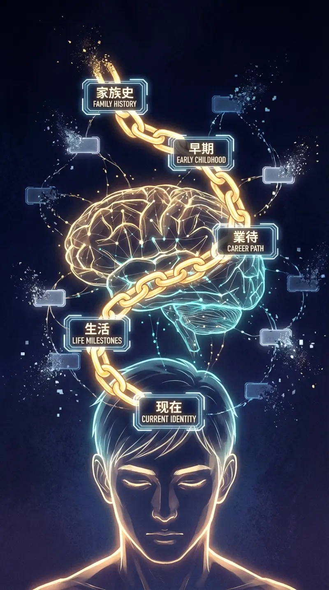
我拼命在记忆消散前锁住关键链条。五个节点，用逻辑的锁链串在一起。其他的细节——三层跳板的具体IP、时间戳的精确分布——正在模糊。
超频的代价：你看得越深，遗忘得越多。
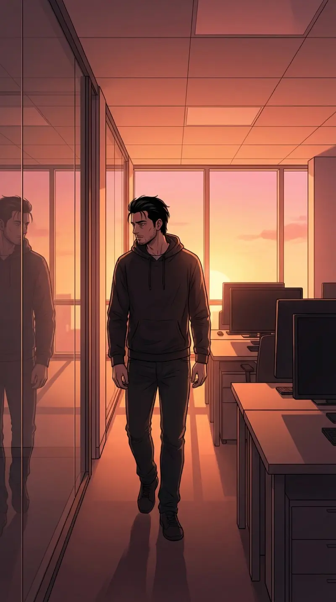
傍晚。同事们陆续离开。我穿过空荡荡的走廊，夕阳从落地窗照进来，把一切染成琥珀色。
该去找陆薇了。
"薇姐，我发现公司内网有异常SSH连接。疑似有外部渗透。需要你帮我加固系统安全。"
陆薇推了推眼镜。"什么级别的渗透？"
"至少三层跳板。目标是核心代码库。"
她沉默了三秒。然后："我今晚加班。给我权限，我来查。"
我看着她的眼睛。超频感知最后闪烁了一下——她的瞳孔微微扩大了。
不是恐惧。是猎手看到猎物时的兴奋。
陆薇不是内鬼。她是猎手。她和我一样。
那双丹凤眼在银框眼镜后面闪烁着光——不是被猎者的慌张，是猎手的锐利。
我放心了。也警觉了。我的合伙人，比我想象的要可怕得多。
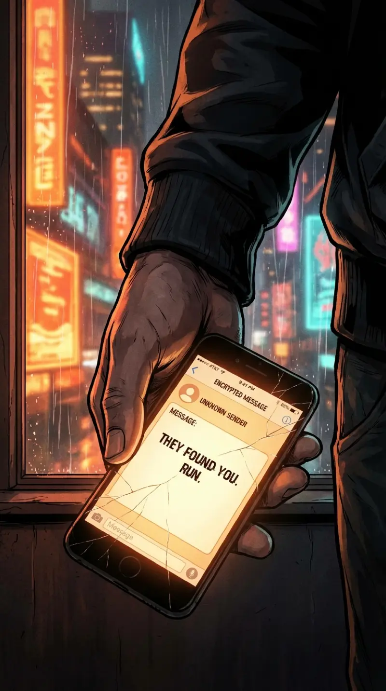
就在我转身离开的时候，手机震动了。一条加密短信——
发送者：方总。
"朱总，明天下午有空吗？我想聊聊合作的事。一个对你和深源都有好处的提案。"
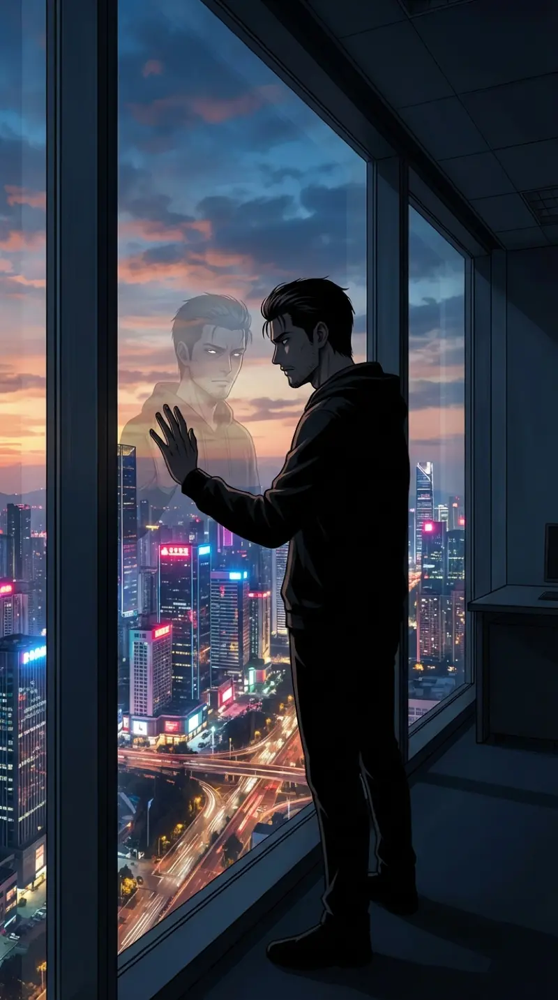
他的时机太巧了。我刚发现他的渗透，他就发来合作邀请。
除非——他知道我发现了。
如果是这样，他的"合作邀请"就不是橄榄枝——是摊牌。
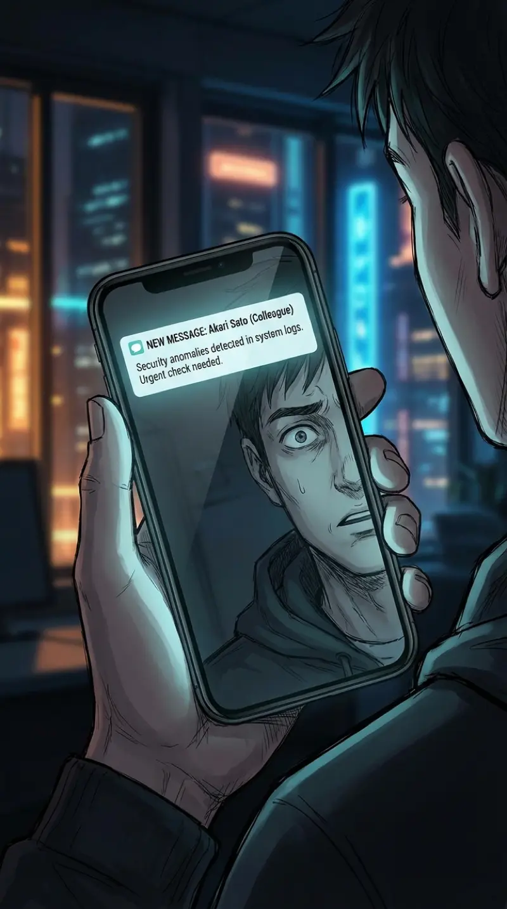
手机又震了。陆薇的消息：
"朱总，我刚初步扫了一下内网日志。有件事你需要知道——被渗透的不只是我的账号。老周的账号也有异常。而且老周的异常比我的早两个月。"
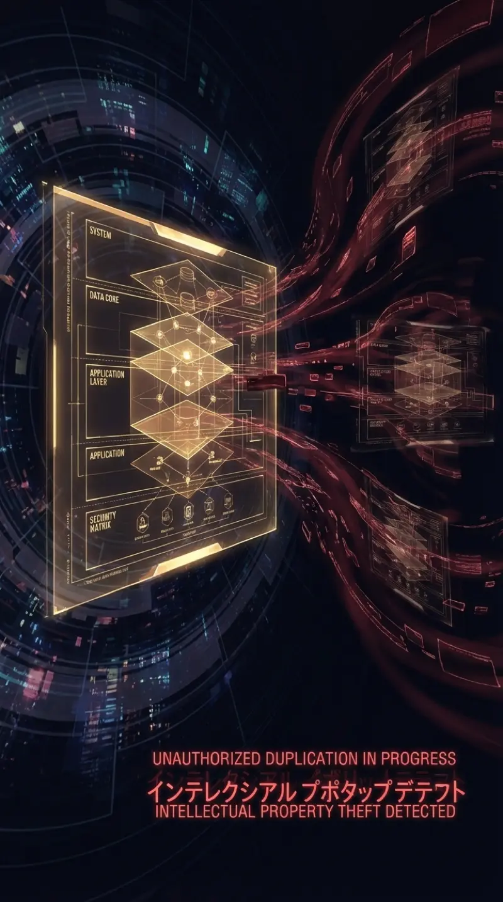
两个月。老周的异常比陆薇的早两个月。
如果渗透是方总从三个月前开始的，那他最先入侵的不是CTO的账号——是首席架构师的。
而首席架构师有什么？完整的系统架构图。
方总不是在偷代码。他是在复制整个深源科技的技术底层。
有了架构图，代码可以重写。他不需要偷你的代码——他需要偷你的设计。
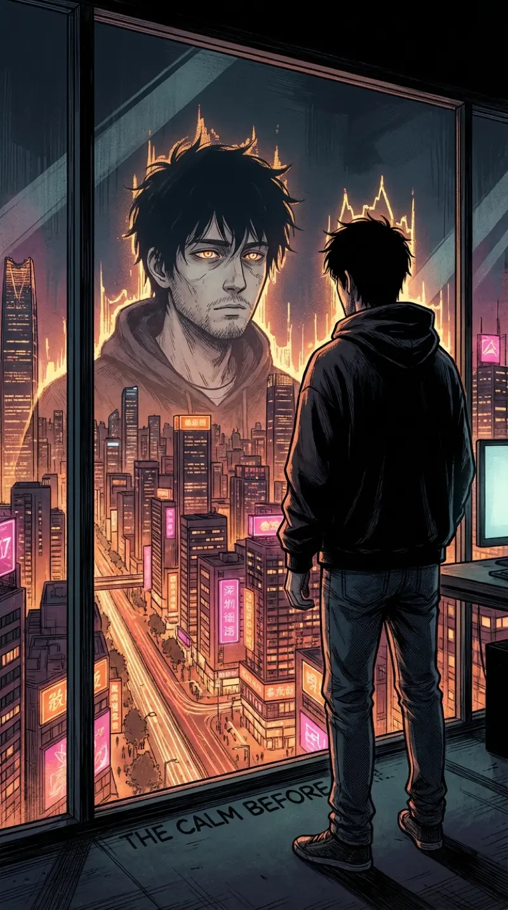
窗外的霓虹灯倒映在玻璃上。我看着自己的倒影——苍白、疲惫，但眼神是亮的。
明天，我要带着超频感知赴方总之约。一场商业谈判，即将变成两个CEO之间的心理博弈。
而方总的反应速度……快得不像正常人。
不会只有我一个人获得了超频觉醒吧？